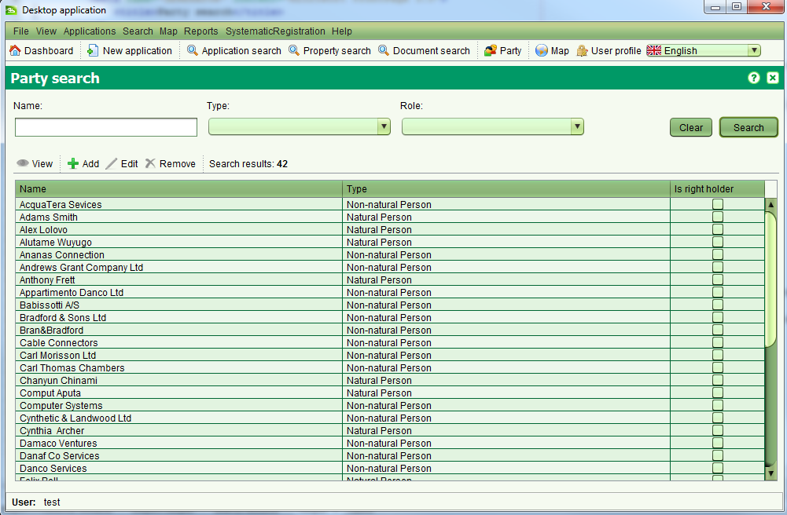

L'écran de Recherche d'une Partie permet de localiser des personnes physique et des organisations ou groupes, des personnes non-physiques ou huridiques.
Ces personnes sont associées à une propriété ou à une transaction de propriété.
Il est possible d'ajouter, éditer, supprimer ou visualiser les détail d'une partie depuis cet écran.
On y accède en sélectionnant  Partie ou Recherche > Partie
Partie ou Recherche > Partie

Il est possible de rechercher par n'importe quelle combinaison de nom, type ou rôle. La coorespondance du nom peut être partielle ou totale.
SOLA n'a pas la capacité de vérifier automatiquement les liens entre parties ou les parties dupliquées.
Il se peut donc que des individus ou des organisations/groupes soient dupliqués plusieurs fois dans le résultat de la recherche.
La marque "Est Détenteur de Droits" indique si la partie est associée directement à la propriété en tant que propriétaire ou
comme une partie associée à d'autres droits de propriété. Les parties marquées comme Détenteurs de Droits ne peuvent pas être éditées ou supprimées en utilisant cet écran.
Dans ce cas, le changement des détails du détenteur de doirts ne peut se faire qu'en utilisant le service approprié.
En utilisant cet écran, il est possible d'ajouter une nouvelle partie en cliquant  ou d'éditer des parties existantes qui ne sont pas marquées comme détenteurs de droits en sélectionnant un résultat de recherche et en cliquant
ou d'éditer des parties existantes qui ne sont pas marquées comme détenteurs de droits en sélectionnant un résultat de recherche et en cliquant  .
Les deux actions ouvrent l'écran de détails de la personne permettant d'entrer les détails pour un individu ou une entité.
Il est également possible d'ajouter des nouvelles parties ainsi que d'éditer des parties existantes en utilisant d'autres fonctions de SOLA comme les personnes à contacter,
les propriétaires ou les détenteurs de droits.
.
Les deux actions ouvrent l'écran de détails de la personne permettant d'entrer les détails pour un individu ou une entité.
Il est également possible d'ajouter des nouvelles parties ainsi que d'éditer des parties existantes en utilisant d'autres fonctions de SOLA comme les personnes à contacter,
les propriétaires ou les détenteurs de droits.
Pour supprimer une partie existante, la sélectionner et cliquer  Si la partie n'est pas liée comme intermédiaire, propriétaire ou détenteur de droit, l'enregistrement peut être supprimé.
Si la partie n'est pas liée comme intermédiaire, propriétaire ou détenteur de droit, l'enregistrement peut être supprimé.
Pour simplement visualiser les détails de la partie, la sélectionner et cliquer 
Voir aussi